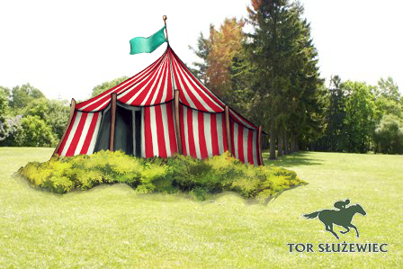
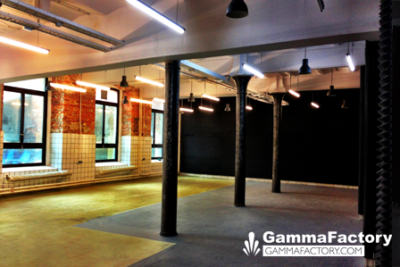

Circus Venue
The most green, calm and quiet area you can find in Warsaw. Horse Racing Track in Warsaw. Colorful circus tent in the center of it. Water fountain right next to it. And sunbeds. And hammocks. And even some blankets to lie down on a green, fresh grass. Yes, we can't wait too.
Horse Racing Track
Poleczki 49, Warsaw - click here for the map
TorSłużewiec.pl
Sprints Venue
Is there a better place to fix some code and work on Django than the old Cheesecake Factory? We don't think so :) The best startup accelerator in Warsaw HardGamma Ventures will host us in their own space in the heart of Warsaw. We hope to eat some great cheesecake, too!
Gamma Factory
Hoża 51, Warsaw - click here for the map
GammaFactory.com
Map
We started creating DjangoCon Europe 2013 map of handful places in Warsaw. There are only venues, entrances and some hotels now, but we're going to add more pubs, clubs, cafes and great spots you shouldn't miss while here :)
See larger DjangoCon Europe 2013 map.